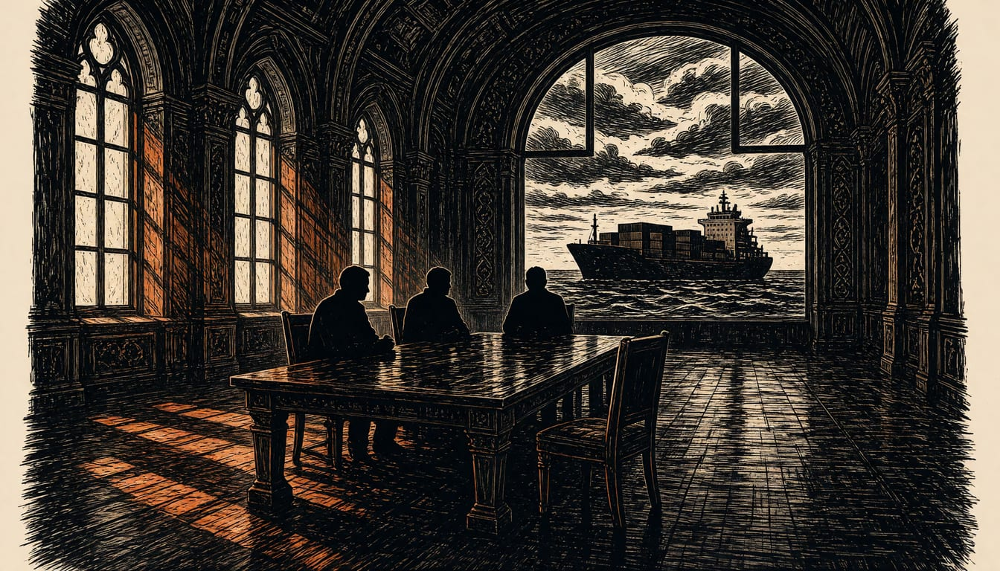

EU to take part in Abu Dhabi trilateral talks
Commission and Council officials will represent Europe in the two-day meetings on November 10 and 11. What is decided there touches Black Sea shipping.

Grigory Karasin, a senior Russian senator on foreign affairs, said no Russian agreement lets European states, including France, join the Abu Dhabi talks, and called Paris's plans wishful thinking. French Foreign Minister Jean-Noel Barrot said the Europeans will be well-represented, and France will be in Abu Dhabi. European Commission President Ursula von der Leyen said the EU will be present alongside its partners.
What is decided there touches the Black Sea and its shipping. Von der Leyen said she backs Zelenskyy's call for a ceasefire covering food and energy infrastructure, and wants freedom of navigation restored. Kyiv's negotiating priorities include an energy truce and Black Sea de-escalation, alongside security guarantees, prisoner exchanges and the return of abducted Ukrainian children. European capitals fear security decisions could be taken without them.
The next round of talks now has a date. Washington set two days of trilateral meetings in Abu Dhabi for November 10 and 11, in the work of US envoy Steve Witkoff. Witkoff said the talks cover post-war security, de-escalation, humanitarian efforts and next steps toward peace. Kremlin spokesman Dmitry Peskov said the talks are Russia and Ukraine with the US as mediator. Peskov said the Americans have their own channels of communication.
Bjoern Seibert, Ursula von der Leyen's chief of staff, will represent the European Commission at the Abu Dhabi talks. Anna-Maria Boura, chief foreign policy adviser to Council President António Costa, will represent the Council there. Costa has agreed to put EU representation in the peace talks on the agenda of the informal EU leaders' meeting in Dublin on Friday.
EU officials think post-war security talks are premature, since Russia has made no concessions at the negotiating table so far. Kaja Kallas, the EU's foreign policy chief, said: "Any agreement that we are not party of, we are not going to implement either."